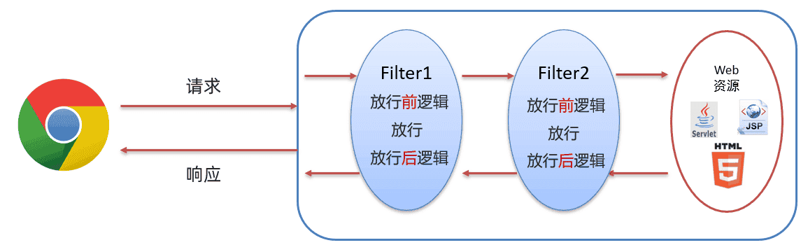

Filter&Listener&Ajax&Axios&JSON
1. Filter
1.1 Filter概述
Filter 表示过滤器，是 JavaWeb 三大组件(Servlet、Filter、Listener)之一。
过滤器可以把对资源的请求拦截下来，从而实现一些特殊的功能。
在没有使用过滤器Filter时浏览器可以访问服务器上的所有的资源（servlet、jsp、html等），而在访问到这些资源之前可以使过滤器拦截来下，也就是说在访问资源之前会先经过 Filter，如下图

拦截器拦截到后可以做什么功能呢？
**过滤器一般完成一些通用的操作。**比如每个资源都要写一些代码完成某个功能，我们总不能在每个资源中写这样的代码吧，而此时我们可以将这些代码写在过滤器中，因为请求每一个资源都要经过过滤器。
我们希望实现的效果是在页面中用户如果登陆过了就跳转到品牌数据展示的页面；如果没有登陆就跳转到登陆页面让用户进行登陆，要实现这个效果需要在每一个资源中都写上这段逻辑，而像这种通用的操作，我们就可以放在过滤器中进行实现。这个就是权限控制，以后我们还会进行细粒度权限控制。过滤器还可以做 统一编码处理、 敏感字符处理 等等…
1.2 Filter快速入门
1.2.1 开发步骤
进行 Filter 开发分成以下三步实现
-
定义类，实现 Filter接口，并重写其所有方法
1
2
3
4
5
6
7
8
9
10public class FilterDemo implements Filter {
public void init(FilterConfig filterConfig) throws ServletException {}
public void doFilter(ServletRequest servletRequest, ServletResponse servletResponse, FilterChain filterChain) throws IOException, ServletException {}
public void destroy() {}
} -
配置Filter拦截资源的路径：在类上定义
@WebFilter注解。而注解的value属性值/*表示拦截所有的资源1
2
public class FilterDemo implements Filter { -
在doFilter方法中输出一句话，并放行
1
2
3
4
5
6public void doFilter(ServletRequest servletRequest, ServletResponse servletResponse, FilterChain filterChain) throws IOException, ServletException {
System.out.println("filter 被执行了...");
//放行
filterChain.doFilter(servletRequest, servletResponse);
}上述代码中的
chain.doFilter(request,response);就是放行，也就是让其访问本该访问的资源。
1.2.2 代码演示
创建一个Maven Web项目，在webapp下有一个 hello.jsp 页面。
pom.xml 配置文件内容如下：
1 |
|
hello.jsp 页面内容如下：
1 | <%@ page contentType="text/html;charset=UTF-8" language="java" %> |
我们现在在浏览器输入 http://localhost/filter-demo/hello.jsp 访问 hello.jsp 页面，这里是可以访问到 hello.jsp 页面内容的。
1 | hello JSP~ |
接下来编写过滤器。过滤器是 Web 三大组件之一，所以我们将 filter 创建在 com.itheima.web.filter 包下，起名为 FilterDemo
1 |
|
重启启动服务器，再次重新访问 hello.jsp 页面，这次发现页面没有任何效果，但是在 idea 的控制台可以看到如下内容
1 | FilterDemo... |
上述效果说明 FilterDemo 这个过滤器的 doFilter() 方法执行了，但是为什么在浏览器上看不到 hello.jsp 页面的内容呢？这是因为在 doFilter() 方法中添加放行的方法才能访问到 hello.jsp 页面。那就在 doFilter() 方法中添加放行的代码
1 | //放行 |
再次重启服务器并访问 hello.jsp 页面，发现这次就可以在浏览器上看到页面效果。
FilterDemo 过滤器完整代码如下：
1 |
|
1.3 Filter执行流程
如上图是使用过滤器的流程，我们通过以下问题来研究过滤器的执行流程：
-
放行后访问对应资源，资源访问完成后，还会回到Filter中吗？
从上图就可以看出肯定 会 回到Filter中
-
如果回到Filter中，是重头执行还是执行放行后的逻辑呢？
如果是重头执行的话，就意味着
放行前逻辑会被执行两次，肯定不会这样设计了；所以访问完资源后，会回到放行后逻辑，执行该部分代码。
通过上述的说明，我们就可以总结Filter的执行流程如下：
graph LR
A[执行放行前逻辑]-->B[放行]
B-->C[访问资源]
C-->D[执行放行后逻辑]接下来我们通过代码验证一下，在 doFilter() 方法前后都加上输出语句，如下
1 |
|
同时在 hello.jsp 页面加上输出语句，如下
1 | <body> |
执行访问该资源打印的顺序是按照我们标记的标号进行打印的话，说明我们上边总结出来的流程是没有问题的。启动服务器访问 hello.jsp 页面，在控制台打印的内容如下：
1 | 1.FilterDemo... |
以后我们可以将对请求进行处理的代码放在放行之前进行处理，而如果请求完资源后还要对响应的数据进行处理时可以在放行后进行逻辑处理。
1.4 Filter拦截路径配置
拦截路径表示 Filter 会对请求的哪些资源进行拦截，使用 @WebFilter 注解进行配置。如：@WebFilter("拦截路径")
拦截路径有如下四种配置方式：
- 拦截具体的资源：/index.jsp：只有访问index.jsp时才会被拦截
- 目录拦截：/user/*：访问/user下的所有资源，都会被拦截
- 后缀名拦截：*.jsp：访问后缀名为jsp的资源，都会被拦截
- 拦截所有：/*：访问所有资源，都会被拦截
通过上面拦截路径的学习，大家会发现拦截路径的配置方式和 Servlet 的请求资源路径配置方式一样，但是表示的含义不同。
1.5 过滤器链
1.5.1 概述
过滤器链是指在一个Web应用，可以配置多个过滤器，这多个过滤器称为过滤器链。
如下图就是一个过滤器链，我们学习过滤器链主要是学习过滤器链执行的流程

上图中的过滤器链执行是按照以下流程执行：
- 执行
Filter1的放行前逻辑代码 - 执行
Filter1的放行代码 - 执行
Filter2的放行前逻辑代码 - 执行
Filter2的放行代码 - 访问到资源
- 执行
Filter2的放行后逻辑代码 - 执行
Filter1的放行后逻辑代码
graph TB
A[执行Filter1的放行前逻辑代码] -->|放行| B[执行Filter1的放行代码]
B -->|放行| C[执行Filter2的放行前逻辑代码]
C -->|放行| D[执行Filter2的放行代码]
D -->|访问到资源| E[访问到资源]
E -->|放行| F[执行Filter2的放行后逻辑代码]
F -->|放行| G[执行Filter1的放行后逻辑代码]
以上流程串起来就像一条链子，故称之为过滤器链。
1.5.2 代码演示
-
编写第一个过滤器
FilterDemo，配置成拦截所有资源1
2
3
4
5
6
7
8
9
10
11
12
13
14
15
16
17
18
19
20
21
22
public class FilterDemo implements Filter {
public void doFilter(ServletRequest request, ServletResponse response, FilterChain chain) throws IOException, ServletException {
//1. 放行前，对 request数据进行处理
System.out.println("1.FilterDemo...");
//放行
chain.doFilter(request,response);
//2. 放行后，对Response 数据进行处理
System.out.println("3.FilterDemo...");
}
public void init(FilterConfig filterConfig) throws ServletException {
}
public void destroy() {
}
} -
编写第二个过滤器
FilterDemo2，配置成拦截所有资源1
2
3
4
5
6
7
8
9
10
11
12
13
14
15
16
17
18
19
20
21
22
23
public class FilterDemo2 implements Filter {
public void doFilter(ServletRequest request, ServletResponse response, FilterChain chain) throws IOException, ServletException {
//1. 放行前，对 request数据进行处理
System.out.println("2.FilterDemo...");
//放行
chain.doFilter(request,response);
//2. 放行后，对Response 数据进行处理
System.out.println("4.FilterDemo...");
}
public void init(FilterConfig filterConfig) throws ServletException {
}
public void destroy() {
}
} -
修改
hello.jsp页面中脚本的输出语句1
2
3
4
5
6
7
8
9
10
11
12<%@ page contentType="text/html;charset=UTF-8" language="java" %>
<html>
<head>
<title>Title</title>
</head>
<body>
<h1>hello JSP~</h1>
<%
System.out.println("3.hello jsp");
%>
</body>
</html> -
启动服务器，在浏览器输入
http://localhost/filter-demo/hello.jsp进行测试，在控制台打印内容如下1
2
3
4
51.FilterDemo...
2.FilterDemo...
3.hello jsp
4.FilterDemo...
5.FilterDemo...从结果可以看到确实是按照我们之前说的执行流程进行执行的。
1.5.3 问题
上面代码中为什么是先执行 FilterDemo ，后执行 FilterDemo2 呢？
我们现在使用的是注解配置Filter，而这种配置方式的优先级是按照过滤器类名(字符串)的自然排序。
比如有如下两个名称的过滤器 ： BFilterDemo 和 AFilterDemo 。那一定是 AFilterDemo 过滤器先执行。
2. Listener
2.1 概述
-
Listener 表示监听器，是 JavaWeb 三大组件(Servlet、Filter、Listener)之一。
-
监听器可以监听就是在
application，session，request三个对象创建、销毁或者往其中添加修改删除属性时自动执行代码的功能组件。request 和 session 我们学习过。而
application是ServletContext类型的对象。ServletContext代表整个web应用，在服务器启动的时候，tomcat会自动创建该对象。在服务器关闭时会自动销毁该对象。
2.2 分类
JavaWeb 提供了8个监听器：
| 分类 | 名称 | 作用 |
|---|---|---|
| ServletContext | ServletContextListener | 监听ServletContext的创建和销毁事件，可用于执行初始化和清理操作 |
| ServletContextAttributeListener | 监听ServletContext属性的添加、修改和删除事件，可用于处理全局属性的变化 | |
| ServletRequestListener | 监听ServletRequest的创建和销毁事件，可用于执行请求级别的初始化和清理操作 | |
| ServletRequestAttributeListener | 监听ServletRequest属性的添加、修改和删除事件，可用于处理请求级别的属性变化 | |
| Session | HttpSessionListener | 监听HttpSession的创建和销毁事件，可用于执行会话级别的初始化和清理操作 |
| HttpSessionAttributeListener | 监听HttpSession属性的添加、修改和删除事件，可用于处理会话级别的属性变化 | |
| HttpSessionBindingListener | 监听绑定到HttpSession的对象的状态变化，可用于处理对象状态的更新 | |
| HttpSessionActivationListener | 监听HttpSession的活化和钝化事件，可用于执行会话对象的序列化和反序列化操作 | |
| Request | AsyncListener | 监听异步请求的状态变化，可用于处理异步操作的完成和错误等事件 |
这里面只有 ServletContextListener 这个监听器后期我们会接触到，ServletContextListener 是用来监听 ServletContext 对象的创建和销毁。
ServletContextListener 接口中有以下两个方法
void contextInitialized(ServletContextEvent sce)：ServletContext对象被创建了会自动执行的方法void contextDestroyed(ServletContextEvent sce)：ServletContext对象被销毁时会自动执行的方法
2.3 代码演示
我们只演示一下 ServletContextListener 监听器
- 定义一个类，实现
ServletContextListener接口 - 重写所有的抽象方法
- 使用
@WebListener进行配置
代码如下：
1 |
|
启动服务器，就可以在启动的日志信息中看到 contextInitialized() 方法输出的内容，同时也说明了 ServletContext 对象在服务器启动的时候被创建了。
3. Ajax
3.1 概述
AJAX (Asynchronous JavaScript And XML)：异步的 JavaScript 和 XML。
我们先来说概念中的 JavaScript 和 XML，JavaScript 表明该技术和前端相关；XML 是指以此进行数据交换。
3.1.1 作用
AJAX 作用有以下两方面：
- 与服务器进行数据交换：通过AJAX可以给服务器发送请求，服务器将数据直接响应回给浏览器。如下图
我们先来看之前做功能的流程，如下图：
如上图，Servlet 调用完业务逻辑层后将数据存储到域对象中，然后跳转到指定的 jsp 页面，在页面上使用 EL表达式 和 JSTL 标签库进行数据的展示。
而我们学习了AJAX 后，就可以使用AJAX和服务器进行通信，以达到使用 HTML+AJAX来替换JSP页面了。如下图，浏览器发送请求servlet，servlet 调用完业务逻辑层后将数据直接响应回给浏览器页面，页面使用 HTML 来进行数据展示。
- 异步交互：可以在不重新加载整个页面的情况下，与服务器交换数据并更新部分网页的技术，如：搜索联想、用户名是否可用校验，等等…
例如我们在百度搜索框中输入一些关键字（例如 奥运）后就会在下面联想出相关的内容，而联想出来的这部分数据肯定是存储在百度的服务器上，而我们并没有看出页面重新刷新，这就是 更新局部页面 的效果。还有我们在登录时输入框输入用户名，当输入框一失去焦点，如果用户名已经被占用就会在下方展示提示的信息；在这整个过程中也没有页面的刷新，只是在局部展示出了提示信息，这就是 更新局部页面 的效果。
3.1.2 同步和异步
知道了局部刷新后，接下来我们再聊聊同步和异步:
- 同步发送请求过程如下
浏览器页面在发送请求给服务器，在服务器处理请求的过程中，浏览器页面不能做其他的操作。只能等到服务器响应结束后才能，浏览器页面才能继续做其他的操作。
-
异步发送请求过程如下
浏览器页面发送请求给服务器，在服务器处理请求的过程中，浏览器页面还可以做其他的操作。
4. axios
Axios 对原生的AJAX进行封装，简化书写。
Axios官网是：https://www.axios-http.cn
4.1 基本使用
axios 使用是比较简单的，分为以下两步：
-
引入 axios 的 js 文件
1
<script src="js/axios-0.18.0.js"></script>
-
使用axios 发送请求，并获取响应结果
-
发送 get 请求
1
2
3
4
5
6axios({
method:"get",
url:"http://localhost:8080/ajax-demo1/aJAXDemo1?username=zhangsan"
}).then(function (resp){
alert(resp.data);
}) -
发送 post 请求
1
2
3
4
5
6
7axios({
method:"post",
url:"http://localhost:8080/ajax-demo1/aJAXDemo1",
data:"username=zhangsan"
}).then(function (resp){
alert(resp.data);
});
-
axios() 是用来发送异步请求的，小括号中使用 js 对象传递请求相关的参数：
method属性：用来设置请求方式的。取值为get或者post。url属性：用来书写请求的资源路径。如果是get请求，需要将请求参数拼接到路径的后面，格式为：url?参数名=参数值&参数名2=参数值2。data属性：作为请求体被发送的数据。也就是说如果是post请求的话，数据需要作为data属性的值。
then() 需要传递一个匿名函数。我们将 then() 中传递的匿名函数称为 回调函数，意思是该匿名函数在发送请求时不会被调用，而是在成功响应后调用的函数。而该回调函数中的 resp 参数是对响应的数据进行封装的对象，通过 resp.data 可以获取到响应的数据。
4.2 快速入门
4.2.1 后端实现
定义一个用于接收请求的servlet，代码如下：
1 |
|
4.2.2 前端实现
-
引入 js 文件
1
<script src="js/axios-0.18.0.js"></script>
-
发送 ajax 请求
-
get 请求
1
2
3
4
5
6axios({
method:"get",
url:"http://localhost:8080/ajax-demo/axiosServlet?username=zhangsan"
}).then(function (resp) {
alert(resp.data);
}) -
post 请求
1
2
3
4
5
6
7axios({
method:"post",
url:"http://localhost:8080/ajax-demo/axiosServlet",
data:"username=zhangsan"
}).then(function (resp) {
alert(resp.data);
})
-
整体页面代码如下：
1 |
|
4.3 请求方法别名
为了方便起见， Axios 已经为所有支持的请求方法提供了别名。如下：
-
get请求 ：axios.get(url[,config]) -
delete请求 ：axios.delete(url[,config]) -
head请求 ：axios.head(url[,config]) -
options请求 ：axios.option(url[,config]) -
post请求：axios.post(url[,data[,config]) -
put请求：axios.put(url[,data[,config]) -
patch请求：axios.patch(url[,data[,config])
而我们只关注 get 请求和 post 请求。
入门案例中的 get 请求代码可以改为如下：
1 | axios.get("http://localhost:8080/ajax-demo/axiosServlet?username=zhangsan").then(function (resp) { |
入门案例中的 post 请求代码可以改为如下：
1 | axios.post("http://localhost:8080/ajax-demo/axiosServlet","username=zhangsan").then(function (resp) { |
5. JSON
5.1 概述
概念：JavaScript Object Notation。JavaScript 对象表示法.
如下是 JavaScript 对象的定义格式：
1 | { |
接下来我们再看看 JSON 的格式：
1 | { |
通过上面 js 对象格式和 json 格式进行对比，发现两个格式特别像。只不过 js 对象中的属性名可以不使用引号，也可以使用引号（可以是单引号，也可以是双引号）；而 json 格式中的键要求必须使用双引号括起来，这是 json 格式的规定。json 格式的数据有什么作用呢？
作用：由于其语法格式简单，层次结构鲜明，现多用于作为数据载体，在网络中进行数据传输。如下图所示就是服务端给浏览器响应的数据，这个数据比较简单，如果现需要将 JAVA 对象中封装的数据响应回给浏览器的话，应该以何种数据传输呢？
大家还记得 ajax 的概念吗？ 是 异步的 JavaScript 和 xml。这里的 xml就是以前进行数据传递的方式，如下：
1 | <student> |
再看 json 描述以上数据的写法：
1 | { |
上面两种格式进行对比后就会发现 json 格式数据的简单，以及所占的字节数少等优点。
5.2 JSON 基础语法
5.2.1 定义格式
JSON 本质就是一个字符串，但是该字符串内容是有一定的格式要求的。 定义格式如下：
1 | var 变量名 = '{"key":value,"key":value,...}'; |
JSON 串的键要求必须使用双引号括起来，而值根据要表示的类型确定。value 的数据类型分为如下
- 数字（整数或浮点数）
- 字符串（使用双引号括起来）
- 逻辑值（true或者false）
- 数组（在方括号中）
- 对象（在花括号中）
- null
示例：
1 | var jsonStr = '{"name":"zhangsan","age":23,"addr":["北京","上海","西安"]}' |
5.2.2 代码演示
创建一个页面，在该页面的 <script> 标签中定义json字符串
1 |
|
通过浏览器打开，页面效果如下图所示
1 | {"name":"zhangsan","age":23,"addr":["北京","上海","西安"]} |
现在我们需要获取到该 JSON 串中的 name 属性值，应该怎么处理呢？
如果它是一个 js 对象，我们就可以通过 js对象.属性名 的方式来获取数据。JS 提供了一个对象 JSON ，该对象有如下两个方法：
parse(str)：将 JSON串转换为 js 对象。使用方式是：var jsObject = JSON.parse(jsonStr);stringify(obj)：将 js 对象转换为 JSON 串。使用方式是：var jsonStr = JSON.stringify(jsObject)
代码演示：
1 |
|
5.2.3 发送异步请求携带参数
后面我们使用 axios 发送请求时，如果要携带复杂的数据时都会以 JSON 格式进行传递，如下
1 | axios({ |
请求参数不可能由我们自己拼接字符串吧？肯定不用，可以提前定义一个 js 对象，用来封装需要提交的参数，然后使用 JSON.stringify(js对象) 转换为 JSON 串，再将该 JSON 串作为 axios 的 data 属性值进行请求参数的提交。如下：
1 | var jsObject = {name:"张三"}; |
而 axios 是一个很强大的工具。我们只需要将需要提交的参数封装成 js 对象，并将该 js 对象作为 axios 的 data 属性值进行，它会自动将 js 对象转换为 JSON 串进行提交。如下：
1 | var jsObject = {name:"张三"}; |
注意：
- js 提供的
JSON对象我们只需要了解一下即可。因为axios会自动对 js 对象和JSON串进行想换转换。- 发送异步请求时，如果请求参数是
JSON格式，那请求方式必须是POST。因为JSON串需要放在请求体中。
5.3 JSON串和Java对象的相互转换
学习完 json 后，接下来聊聊 json 的作用。以后我们会以 json 格式的数据进行前后端交互。前端发送请求时，如果是复杂的数据就会以 json 提交给后端；而后端如果需要响应一些复杂的数据时，也需要以 json 格式将数据响应回给前端浏览器。
在后端我们就需要重点学习以下两部分操作：
- 请求数据：JSON字符串转为Java对象
- 响应数据：Java对象转为JSON字符串
接下来给大家介绍一套 API，可以实现上面两部分操作。这套 API 就是 Fastjson
5.3.1 Fastjson 概述
Fastjson 是阿里巴巴提供的一个Java语言编写的高性能功能完善的 JSON 库，是目前Java语言中最快的 JSON 库，可以实现 Java 对象和 JSON 字符串的相互转换。
5.3.2 Fastjson 使用
Fastjson 使用也是比较简单的，分为以下三步完成
-
导入坐标
1
2
3
4
5<dependency>
<groupId>com.alibaba</groupId>
<artifactId>fastjson</artifactId>
<version>1.2.62</version>
</dependency> -
Java对象转JSON
1
String jsonStr = JSON.toJSONString(obj);
将 Java 对象转换为 JSON 串，只需要使用
Fastjson提供的JSON类中的toJSONString()静态方法即可。 -
JSON字符串转Java对象
1
User user = JSON.parseObject(jsonStr, User.class);
将 json 转换为 Java 对象，只需要使用
Fastjson提供的JSON类中的parseObject()静态方法即可。
5.3.3 代码演示
-
引入坐标
-
创建一个类，专门用来测试 Java 对象和 JSON 串的相互转换，代码如下：
1
2
3
4
5
6
7
8
9
10
11
12
13
14
15
16
17
18public class FastJsonDemo {
public static void main(String[] args) {
//1. 将Java对象转为JSON字符串
User user = new User();
user.setId(1);
user.setUsername("zhangsan");
user.setPassword("123");
String jsonString = JSON.toJSONString(user);
System.out.println(jsonString);//{"id":1,"password":"123","username":"zhangsan"}
//2. 将JSON字符串转为Java对象
User u = JSON.parseObject("{\"id\":1,\"password\":\"123\",\"username\":\"zhangsan\"}", User.class);
System.out.println(u);
}
}